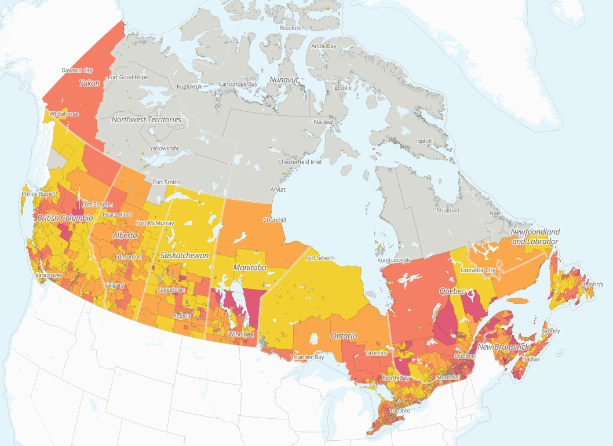
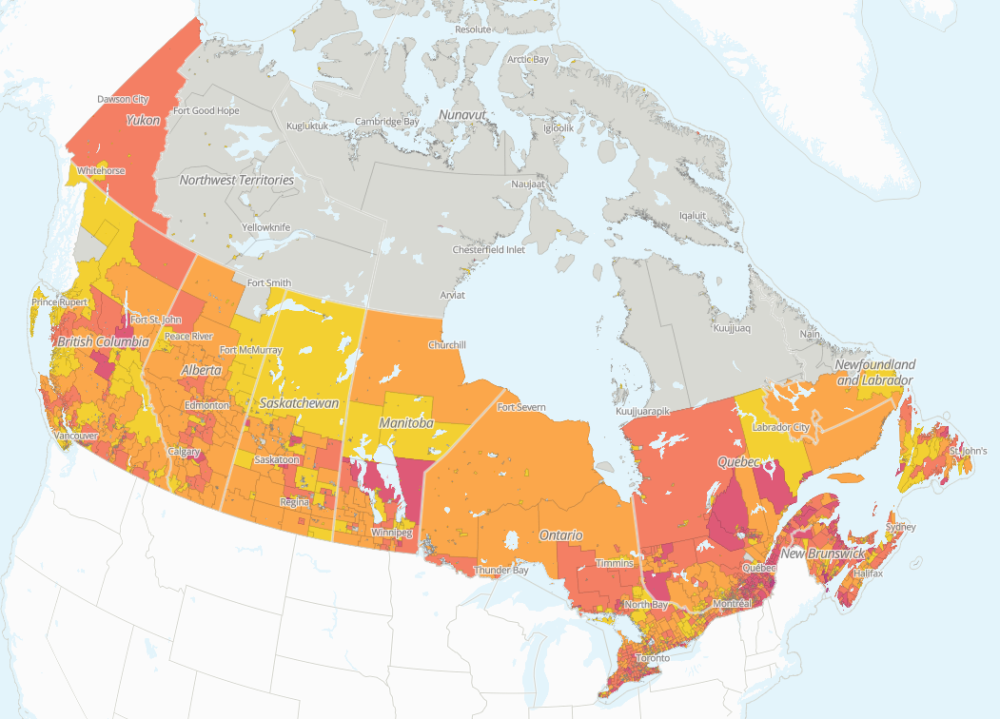
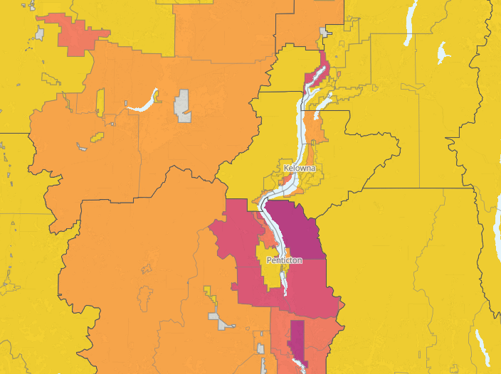
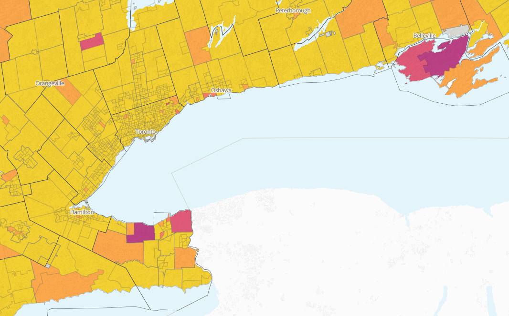
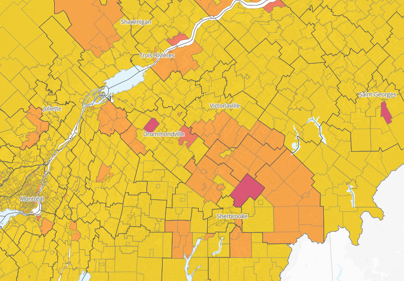
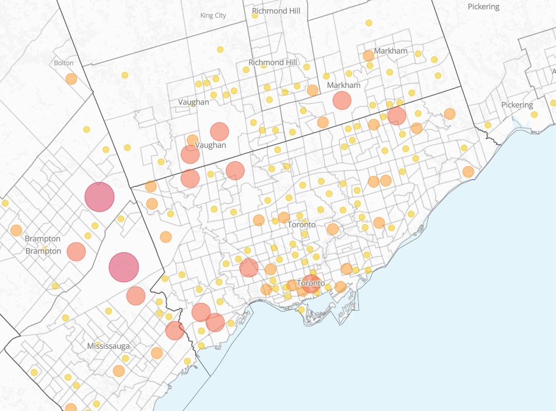
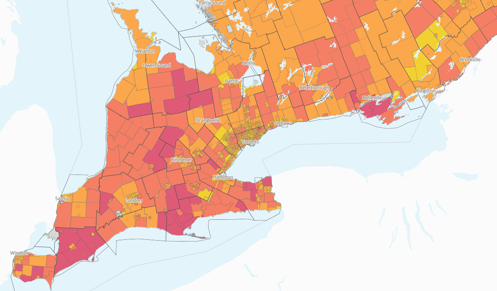

By
Tara Vinodrai
Karen Chapple,
Yihoi Jung,
Jeff Allen,
~ September 9, 2026
Mapping tariffs: Reflecting on new Section 338 Tariffs
After negotiators representing Canadian and U.S. governments were unable to reach a trade deal, the Trump administration moved to impose a raft of new tariffs on Canadian goods effective as of August 22, 2026. These new tariffs, exercised under Section 338 of the 1930 US Tariff Act, include a 50% tariff on a variety of goods, ranging from honey to hockey sticks, including goods previously exempt due to their compliance with CUSMA. In response to these mounting tariffs, the Government of Canada has introduced counter-tariffs that went into effect on September 8, 2026.
Even though Canada-U.S. trade relations continue to worsen after the collapse of recent trade talks, the Canadian economy remains deeply integrated with the U.S. economy. Statistics Canada reports that, in 2025, U.S.-Canada trade includes $562.7 billion in exports and $361.8 billion in imports. And while the United States is still Canada’s largest trading partner, there is evidence that this may be slowly shifting. Between 2024 and 2025, the proportion of exports from Canada to the United States decreased from 76.3% to 72.3%. Similarly, the proportion of imports accounted for by the United States declined from 49.2% in 2024 to 45.9% in 2025. These shifts in the relative importance of the U.S. market are likely indicators of the efforts of Canadian businesses and governments to mitigate the potential fallout from tariffs. These efforts have included extensive “buy local” and “buy Canadian” campaigns, shifts in procurement and spending patterns, the diversification of supply chains, and attempts to reach wider, global markets.
Since we released Mapping Tariffs in October 2025, we have been tracking the potential vulnerability of Canadian cities and neighbourhoods to U.S. tariffs. The newest round of tariffs imposed by the Trump administration represents a significant escalation in the ongoing trade dispute between Canada and the United States. Therefore, we ask: Which places will be most vulnerable to new Section 338 tariffs? And, how has the tariff vulnerability landscape for Canadian cities changed, given the more expansive list of goods that are subject to tariffs?
In our most extensive update since the release of our mapping tariffs and city ranking tools, we have incorporated the following changes to help us understand the potential vulnerabilities to tariffs across Canada and its cities:
- Additional layers reflecting the new Section 338 tariffs, based on three separate orders made by the Trump administration on dairy, alcohol, and motor vehicles (although we note, as do others, that the motor vehicles tariffs target an extensive range of goods that are completely unrelated to motor vehicles); and
- Updates to the overall potential impacts of tariffs before and after the imposition of the Section 338 tariffs effective August 22, 2026.
Deepening vulnerabilities
Overall, we observe deepening and widening vulnerabilities to U.S. tariffs measured by businesses and employment (based on place of work and place of residence). To illustrate how the newest round of tariffs may impact Canadian cities and regions, we begin with a map showing the overall vulnerability to tariffs across Canada before the introduction of the new Section 338 tariffs on August 22, 2026 as measured by employment.

Potential direct tariff exposure to employment (place of work) in Canada due to tariffs before August 22, 2026
Click here to view interactive map
We compare the previous map by adding the tariffs that came into effect on August 22, 2026. The map below shows the overall vulnerability to employment across Canada after the introduction of the new Section 338 tariffs on August 22, 2026.

Potential direct tariff exposure to employment (place of work) in Canada due to tariffs after August 22, 2026
Click here to view interactive map
As we observed when we first released the Mapping Tariffs project, almost every city, community, and neighbourhood is vulnerable to tariffs. And, given that the new tariffs cover a range of economic activities, there is a deepening of vulnerabilities, especially in places specializing in manufacturing. For example, the map shows that while there are widespread vulnerabilities to workers, there are greater vulnerabilities in the Greater Golden Horseshoe due to the higher concentration of manufacturing industries in Canada’s industrial heartland.
Overall, our updated results continue to underscore the localized impacts of this new round of tariffs. We now turn to examining some of the specific potential impacts related to each of the three separate proclamations made by the Trump administration.
Alcohol tariffs
Tariffs may have a significant impact on wine-producing regions across Canada. For example, the map below shows the potential impact of tariffs on the Okanagan wine region, surrounding the City of Kelowna. Wine-making represents an important economic and tourism sector for the Okanagan region, and wineries export to the U.S. and other markets.

Potential direct tariff exposure to businesses in the Okanagan Valley due to alcohol-related tariffs
Click here to view interactive map
Similarly, wine-making is an important economic activity and driver of tourism in southern Ontario, including in Prince Edward County and the Niagara region. The map below shows how the impact of alcohol tariffs raises vulnerability in these two parts of the province of Ontario.

Potential direct tariff exposure to businesses in southern Ontario due to alcohol-related tariffs
Click here to view interactive map
Dairy
Not surprisingly, the most acute potential impacts of dairy tariffs are observed in rural areas. The map below shows the areas surrounding Sherbrooke as being particularly vulnerable. The Eastern Townships (Cantons-de-l'Est), where Sherbrooke is located, is a renowned dairy and artisan cheese-producing region. Other parts of Quebec – including the areas around Chicoutimi and the wider Saguenay–Lac-Saint-Jean region, which are famous for producing nationally and internationally recognized cheeses – also register as being vulnerable to dairy tariffs.

Potential direct exposure to businesses in Sherbrooke and the Eastern Townships due to dairy tariffs
Click here to view interactive map
The next map shows potential impacts of dairy tariffs on businesses in Toronto. While we often imagine activities related to dairy having an impact on areas outside urban centres (as shown above), Canadian cities are not immune to dairy tariffs. Major dairy processors, including Gay Lea, Lactalis, Saputo, and Agropur maintain office, distribution, and/or industrial operations across the Greater Toronto Area, and represent some of the region’s largest food industry employers.

Potential direct exposure to businesses in Toronto due to dairy tariffs
Click here to view interactive map
Motor vehicles
As noted, the motor vehicle tariffs introduced by the Trump administration apply to a wide swath of goods, which are mostly unrelated to the actual manufacture of automobiles. For example, honey producers across Canada, including in honey-producing regions in the Prairies, are widely reported to be concerned about the growing costs of accessing their primary markets, located in the United States.
In fact, given the wide range of goods included in the Section 338 motor vehicle tariffs, it is clear that the potential vulnerabilities are widespread. The map below shows the potential exposure to employment in southern Ontario due to motor vehicle tariffs. Given that the industrial base of Canada is heavily concentrated in Ontario and Quebec, it is not surprising that these areas, already vulnerable due to tariffs on automotives, steel and aluminum, face additional vulnerabilities.

Potential direct tariff exposure to businesses in southern Ontario due to motor vehicle tariffs
Click here to view interactive map
Conclusion
Overall, our mapping and visualization tools provide a window into the highly localized, widening, and deepening impacts of U.S. tariffs across Canada’s cities and regions. We have highlighted only a few examples of the uneven tariff exposure across Canada and its cities. But these patterns extend across Canada’s urban system. For example, there are localized vulnerabilities to alcohol tariffs in neighbourhoods that are home to local breweries in cities such as Toronto, Montreal, and Vancouver. And the widening net of tariffs on manufactured goods has an outsized impact on the vulnerability of cities around the Greater Golden Horseshoe, including those along the edges of Lake Ontario (yes, Lake ONTARIO). Vulnerabilities to sector-specific tariffs bring into sharp relief underlying regional specialization patterns across Canada and its cities.
Our visualizations represent an estimate of the potential direct impacts on Canadian jobs and businesses. These estimates cannot account for the actual economic activity of Canadian businesses since the Trump administration first introduced tariffs on Canadian goods in February 2025. Our current analysis also cannot account for the downstream impacts of tariffs, referred to as the indirect and induced impacts related to these external shocks to urban and regional economies. Stay tuned for our upcoming release of models that include these extended effects. In the meantime, we invite you to explore our updated online mapping and visualization tool, as well as our city ranking tool.
Note: At time of publication, the Trump administration had just made five additional proclamations related to tariffs. Three of these proclamations exclude certain dairy and alcohol related goods, as well as motorcycles, from being imported into the United States from Canada. The other two proclamations modify (through additions or subtractions) the lists of goods subject to tariffs under the motor vehicle and alcohol proclamations. All excluded goods are accounted for in our new Section 338 map layers, but we cannot currently distinguish between goods that are subject to tariffs and those that are completely excluded from export to the US. We have not yet updated the Section 338 tariffs to include the additions and subtractions. And we have not yet conducted analysis to account for Canada’s counter-tariffs.